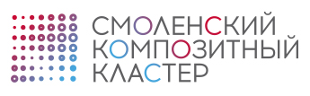

Индустриальный парк «Феникс»
Основная идея проекта – создание в Смоленской области федерального отраслевого научного, образовательного и промышленного центра по производству изделий из композитных материалов на базе одного из ведущих предприятий России по производству крупногабаритных изделий из композиционных материалов открытого акционерного общества «Авангард» (г. Сафоново, Смоленская область).
Проект соответствует целям Инвестиционной стратегии Смоленской области до 2025 года и способен обеспечить выполнение целого ряда запланированных экономических и социальных задач.
Реализация проекта обеспечит высокие темпы системного развития российской отрасли композитных материалов за счет промышленной реализации инновационных проектов, использования новых видов материалов и оборудования в сфере энергетики, транспорта, промышленного строительства.
Стать участником кластера: ruscomposites.ru
Льняной кластер
Министерство промышленности и торговли России поддержало обращение Губернатора региона Алексея Островского с инициативой о формировании на территории Смоленской области промышленного кластера по производству высококачественной промышленной продукции из льна.
В настоящий момент Смоленская область является единственным субъектом в России, получившим поддержку Минпромторга по данному направлению.
Развитие комплекса по выращиванию и переработке льна, в том числе, глубокой, в Смоленской области является стратегическим направлением. В 2012 году принята региональная экономически значимая программа развития льноводства до 2017 года, главной задачей которой является техническая и технологическая модернизация производства и переработки льносырья, выпуск новых видов льнопродукции, повышение их качественных параметров и поставка конкурентных товаров из льна на российский и зарубежные рынки.
Кроме того в рамках Стратегии развития льноводства до 2020 года поставлена задача увеличить посевную площадь под лен до 20 тыс. га, а общий потенциал посевных площадей для выращивания этой культуры составляет 40-50 тыс. га, причем, одним из наиболее перспективных направлений развития комплекса является производство промышленной продукции.
Необходимо отметить, что проводимая Администрацией Смоленской области работа по развитию льноводства, создание преференций для инвесторов наряду с благоприятными погодно-климатическими условиями способствовали тому, что сегодня регион является инвестиционно привлекательным для выращивания и переработки льняного сырья.
С учетом вышеперечисленных факторов, а также принимая во внимание необходимый научно-исследовательский потенциал Смоленской области, Администрацией субъекта было принято решение о формировании на территории региона промышленного кластера по производству высококачественной промышленной продукции из льна. Важнейшими предпосылками для принятия указанного решения при этом стали реализация возможностей для создания и развития необходимой и достаточной инфраструктуры Кластера, развитие производственной кооперации его участников, а также применение к ним мер стимулирования деятельности в данной сфере промышленности.
В рамках реализации решения о формировании Кластера между Администрацией Смоленской области и ООО «Агропромышленная корпорация «Вологодчина», ООО «Рослек» уже подписаны соглашения о сотрудничестве, предполагающие комплексное развитие отрасли, предусматривающие как производство льняного волокна с его последующей глубокой переработкой для выпуска высококачественной льняной пряжи, так и производство целлюлозы, нетканых и медицинских материалов.